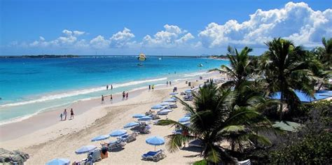
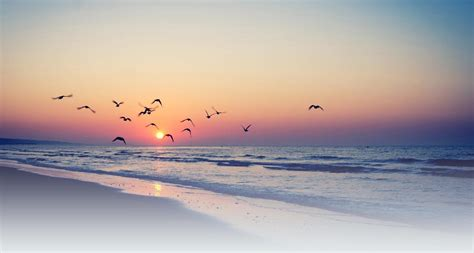

Cox's Bazar: The Most Buzzing Inbound Tourist Zone in Bangladesh


Cox’s bazar is the most attractive tourist spot in Bangladesh and all around the world too. If you are looking for a place to visit you may choose Cox’s bazar as your first choice but many of you may be thinking why I choose Cox’s bazar? I already visited that place. Then, this article may help you to think again to choose your next destination for visit. You may be thinking why I am telling you to visit Cox’s Bazar, alright let me explain it to you.
Inani Beach
Inani beach is a famous place in Cox’s Bazar. But for lack of proper information’s tourist failed to visit an amazing place like Inani beach. The Inani beach is mainly a coral beach with sharp stones. Inani beach is only 23 km. away from Cox’s bazar and takes only 40min to go by road. You can enjoy the beach view as it is different from other beaches. There are high tides on sea and you must stay in a safe place when the redflags up. Be careful if you try to swim here as the tides are unpredictable in this part of the sea.
Marine Drive
The longest marine drive in the world is Cox’s bazar – Teknaf marine drive which is about 80 kilometer long. You can ride a jeep called Chander Gari from Cox’s Bazar to Teknaf ,the southeast point of Bangladesh. You can go to Saint Martin Island by using the marine drive. Let's make a drive soon!
Saint Martin
Saint Martin Island also known as Narikel jinjira, Daruchini Dwip, Probal Dwip is a small Island and it is the southernmost part of Bangladesh. It is about three square kilometer and known for its unique scenic view. Saint Martin Island will give you an amazing feeling where you can enjoy the sea sides from every part of the island as well as from the middle of the sea.
There is a lighthouse in Island. There are ships from Cox’s bazar to visit Saint Martin Island where tourists can enjoy about 190 mile of sea traveling with scenic views with the seagulls flowing their cruise ship.
Kutubdia Island
Kutubdia Island had historical background that a man Kutubuddin first came here and later he gave shelter to the Muslim of Arakan as a sign of respect the island named ‘Kutubuddin Dia’ as later on ‘Kutubdia’.
Kutubdia Island, famous for the first built lighthouse of Bangladesh from the British era. The lighthouse shows the way of the sailors for the seafaring ship. The lighthouse is about 40 meters in height with six decks/rooms and wooden stairs. The fuel of the lamp came from coconut oil. There is a basement in the ground and the structure is very strong and thick.
Ramu
Ramu is a Buddhist village. Ramu was named after the Royal Ramu dynasty of Arakan. A thirteen feet high bronze image of Buddha was found at Ramu in the time of The Mughals (1666). This is the biggest of the Buddha images hitherto discovered in Bangladesh. Ramkot Hindu Temple, Ramkot Buddhist Keyang, Lamarpara Buddhist Keyang are known Hindu and Buddhist places with many Monasteries.